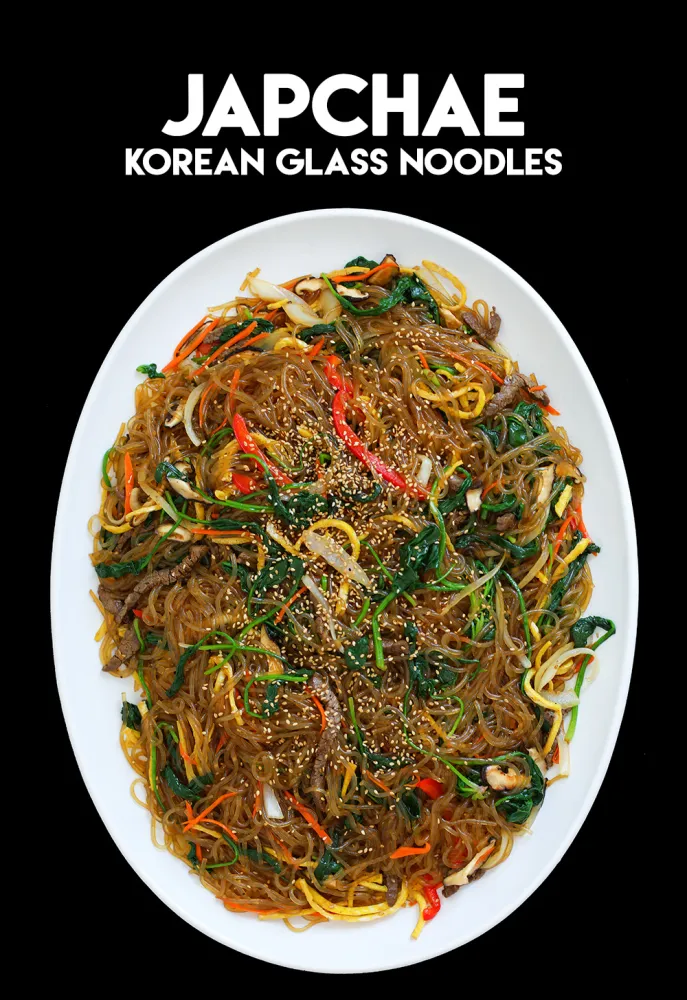

Japchae
Japchae, sweet potato starch noodles stir fried with vegetables and meat, is one of Korea’s best-loved dishes.
Ingredients
- 4 ounces beef, fillet mignon (or pork shoulder), cut into 1/4 inch wide and 2 1/2 inch long strips.
- 2 large dried shiitake mushrooms, soaked in warm water for 2 to 3 hours, cut into thin strips
- 2 garlic cloves, minced
- 1 tablespoon plus 2 teaspoons sugar
- 2 tablespoons plus 1 teaspoon soysauce
- 2 tablespoons toasted sesame oil
- 1 tablespoon sesame seeds
- large egg
- 4 ounces spinach, wash and drained
- 4 ounces of dangmyeon (sweet potato starch noodles)
- 2 to 3 green onions, cut crosswise into 2 inch long pieces
- 1 medium onion (1cup), sliced thinly
- 4 to 5 white mushrooms, sliced thinly
- 1 medium carrot (3/4), cut into matchsticks
- 1/2 red bellpepper, cut into thin strips (optional)
- ground black pepper
- kosher salt
- vegetable oil
Steps
- Put the beef and shiitake mushrooms into a bowl and mix with 1 clove of minced garlic, 1 teaspoon sugar, ¼ teaspoon ground black pepper, 2 teaspoons soy sauce, and 1 teaspoon of toasted sesame oil with a wooden spoon or by hand. Cover and keep it in the fridge.
- Bring a large pot of water to a boil. Add the spinach and blanch for 30 seconds to 1 minute, then take it out with a slotted spoon or strainer. Let the water keep boiling to cook the noodles.
- Rinse the spinach in cold water to stop it from cooking. Squeeze it with your hands to remove any excess water. Cut it a few times and put it into a bowl. Mix with 1 teaspoon soy sauce and 1 teaspoon toasted sesame oil. Put it into a large mixing bowl.
- Put the noodles into the boiling water, cover and cook for 1 minute. Stir them with a wooden spoon so they don’t stick together. Cover and keep cooking for another 7 minutes until the noodles are soft and chewy.
- Strain and cut them a few times with kitchen scissors. Put the noodles into the large bowl next to the spinach. Add 2 teaspoons toasted sesame oil, 1 teaspoon soy sauce, and 1 teaspoon sugar. Mix well by hand or a wooden spoon. This process will season the noodles and also keep the noodles from sticking to each other.
- Heat up a skillet over medium high heat. Add 2 teaspoons vegetable oil with the onion, the green onion, and a pinch of salt. Stir-fry about 2 minutes until the onion looks a little translucent. Transfer to the noodle bowl.
- Heat up the skillet again and add 2 teaspoons vegetable oil. Add the white mushrooms and a pinch of salt. Stir-fry for 2 minutes until softened and a little juicy. Transfer to the noodle bowl.
- Heat up the skillet and add 1 teaspoon vegetable oil. Add the carrot and stir-fry for 20 seconds. Add the red bell pepper strips and stir-fry another 20 seconds. Transfer to the noodle bowl.
- Heat up the skillet and add 2 teaspoons vegetable oil. Add the beef and mushroom mixture and stir fry for a few minutes until the beef is no longer pink and the mushrooms are softened and shiny. Transfer to the noodle bowl.
- Add 1 minced garlic clove, 1 tablespoon soy sauce, 1 tablespoon sugar, ½ teaspoon ground black pepper, and 2 teaspoons of toasted sesame oil to the mixing bowl full of ingredients. Mix all together by hand.
- Add the egg garnish and 1 tablespoon sesame seeds. Mix it and transfer it to a large plate and serve.